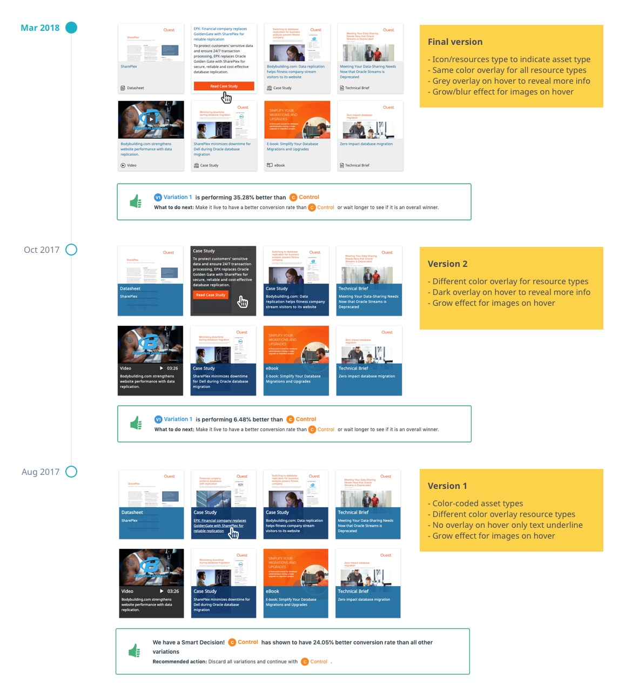
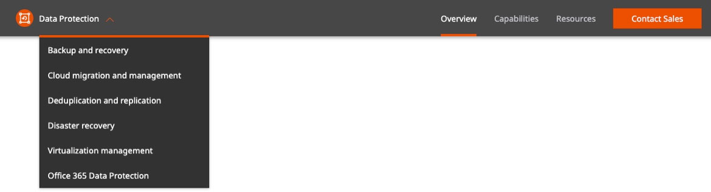
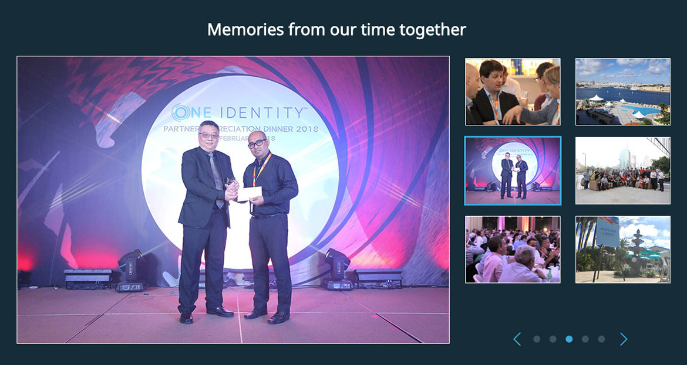
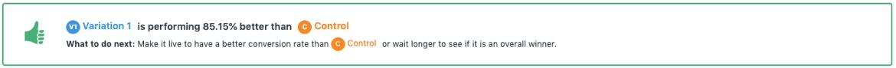

Overview
Problem
Quest website hosts more than 100 products not only on the marketing website but also on other domains such as e-commerce, support, community, and partners platforms. Consistent style is an essential factor across all domains to maintain shared user experience and branding.
Solution
Building a responsive pattern library as a collection of UI elements that can be reused across all domains. The library will create a solid framework to communicate design standards to everyone who touches Quest domains.
My Role
UX/UI Designer
Timeline
Ongoing (2016 - Current)
Tools
Sketch, Adobe Photoshop, Frontify, Hand-Coded Prototypes, Zeplin, Visual Web Optimizer (for user testing), OptinMonster
My Approach
Whether creating a UI pattern from scratch or redesigning an existing pattern to enhance the user experience, It is important to comply with WCAG accessibility guidelines and create intuitive solutions for everyone. Following are some of the activities I took to design these patterns:
- Literature review
- Competitive analysis
- Design iterations & review sessions
- Verify accessibility of the final layout based on WCAG guidelines we created on Quest branding site
- Prototyping
- Quantitative User testing using VWO
- Hand over to developers using Zeplin and interactive prototypes
- Test to ensure they are accurate in all devices/browsers
- Creating guidelines for pattern usage in Quest design library
- Creating image templates for challenging patterns
- Creating a Sketch UI library of patterns through symbols and maintaining the history over time
UI Patterns
Banner
An area for major promotions and events.

Rationale
- The pattern helps to promote multiple topics
- Randomization will ensure that each banner has been displayed on the first spot at least once at each visit
- Pinning will enable to have a major item always appear on the first spot
- Carousel suggests additional items that are not visible and encourages the user to explore further
- Pause on hover will ensure the user has enough time to read the text
Accessibility Considerations
- Using alternative descriptions for images
- Using dark or light overlay on image for text overlay to make it readable
- Using large text size on buttons which passes AA level WCAG 2.0 standards
- Pause on banner hover and using navigational controls to give users control over automated content
Interactive Icons
Selectable items associated with an icon.
Rationale
- Creates visually expressing objects that encourage taking an action
- Guides users to where they need to go using a transforming effect
- Saves screen real estate and enhances static appeal through using iconography
Accessibility Consideration
Following the color contrast ratio for the icon and the circle background to make sure they are legible against their background in different states (load vs hover)
Image with Sliding Caption
A collection of featured products.

Rationale
- Creates a set of images with supporting captions
- Reveals further information on demand
- Saves screen space by hiding extra text on an overlay to create a cleaner look
- Allows multiple rows and carousel to browse through several items without wasting the real estate space
Accessibility Considerations
- Using dark overlay on images to make the white text legible
- Using up/down arrow to indicate overlay can slide up/down
Hero Area
This area is the first visual element a visitor encounters and it presents an overview of the page content.


Rationale
- Create a theme for a set of products by using unique background images
- Promote main call to actions & assets in the top fold
- Use an overview video to provide a quick demo about the content of the page
View Patterns:
Hero with a diagonal cut and centered video Hero with 3 assets Hero with diagonal cut and left-aligned videoResources with Sliding Overlay
The goal is to show a mix of several asset types in one area. (i.e White paper, Infographic, Datasheet, Video, e-Book, etc) and display more details upon interaction.

Rationale
- Create a collection of related items for users to browse
- Specify the type of each asset upfront (before interaction happens)
- Provide additional information on demand to create a less text-heavy pattern
- Use existing size document covers and video steels to avoid extra manual work
This pattern has been revised 3 times based on A/B test campaigns. Following is the history of the result:
Customer Quote
This pattern showcases customer quotes to validate the information on the page. It can be used to display ratings from external sources as well.


Rationale
- Makes page more credible by backing up the content using actual quotes from existing customers
- The imagery along with the company logo creates a quick taste of the industry the quote is about
- Encourages the user to read the full case study for more details
- Rotation makes sure that all items are visible regardless of users interaction
- Pause on hover will ensure the user has enough time to read the text
Product Tour
It is used to give users insights into what the product is about and teach them common and uncommon features to allow them to make an informed purchase decision.
Rationale
- A walkthrough of what the product can do and whether it helps to accomplish certain tasks
- Provide a visual reference for a feature through an image or video
- List all the features to make an informed selection
- Provide related resources for a particular feature for further exploration
- Encourage users to have a glimpse of the product before they buy or sign up
Page Navigation
A horizontal fixed bar that contains different sections of a long page for easier navigation.
Rationale
- Create a visual indication of what sections can be found on a long page
- Take users to the corresponding section without scrolling
- The current location in the context is clear through highlighting the item in the bar
Accessibility Considerations
- Providing a visual indication to where users are on the page by highlighting the section name in the page navigation
- Supporting keyboard shortcuts to access different items in the page navigation
Cards
A collection of digestible content in flexible containers that calls for action. They can consist of different elements and don’t necessarily require direct comparison.
Rationale
- Cards are great for showing an entry point for more detailed information
- They are not overloaded with information which makes scanning easier for the users while scrolling the page
- They divide variable content into meaningfully related sections
- They are attractive since they are heavily dependant on visuals
- They are mobile-friendly and seem familiar to users
View Patterns:
Cards with footer Cards with CTA Cards with background imageImage Gallery
The pattern allows the user to browse through a series of images sequentially.
Rationale
- Use a larger real estate for displaying images in high resolution
- Mainly to show images taken from a conference or event to show different activities throughout the event
Statistics
The main purpose of this pattern is to showcase important pieces of statistics extracted from data or infographic to further support the page content with actual data.
Rationale
- Providing information in a more comprehensive way
- Illustrations will help present complex information in an intuitive way
Accessibility Consideration
Providing alternative text for number based images
Form
It’s a collection of user input elements in exchange to:
- Download a free trial
- Download a white paper, ebook, infographic
- Contact sales


Form Flow

Rationale
- Provide access to downloads in exchange of information with minimal effort
- Build user profile and provide access to all assets once users register
- Provide relevant, personalized content based on data collected from the user
Accessibility Considerations
- Giving every form field a visible and clear label
- Indicating required fields using *
- Visual indicators for focused and completed fields
- Multiple indicators for errors such as icon, red line, and a descriptive message for recovery
- Making sure that the form is organized intuitively
I’ve run a conversion tracking campaign on multiple pages using VWO and following is the result for the new form:

Filters
They are used to narrow down search results for users to speed up discoverability.

Rationale
- Filters will help users to progressively remove the criteria they don’t need and receive feedback immediately
- The main goal is to simplify search and accelerate finding the resulting user wants
Accessibility Considerations
- Providing a visual indication to where users are on the page by highlighting the section name in the page navigation
- Supporting keyboard shortcuts to access different items in the page navigation
Promotion
Campaigns to display attention-grabbing offers to the users at the right time with customizable triggers.

Rationale
- Creating personalized promotions will increase the chance of getting the users select them for more information
- Promoting important events with eye-catching campaigns
- Create a way for voting
- Create engaging elements without coding
- Track conversion in Google analytics
- Trigger campaigns based on location, referrer, or cookie values
Awards
This pattern is to display any awards or industry recognition to help increase the reputation of a product or solution.
Rationale
- Showcasing industry recognition and awards will increase the credibility of products
- It will also increase the chances of conversion and purchasing the product
I have conducted A/B test to see if the presence of awards will improve conversion rate using VWO and following is the result:
